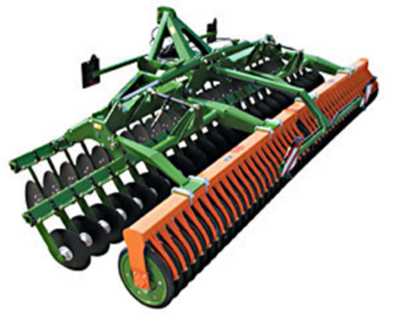
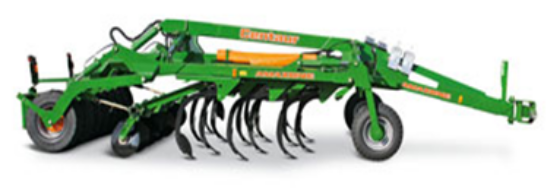
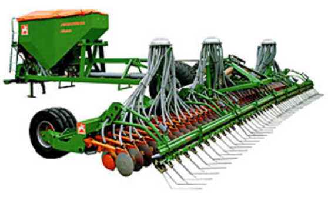
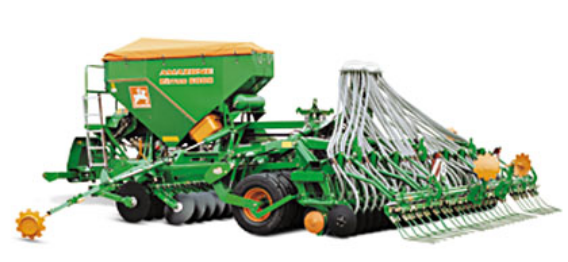
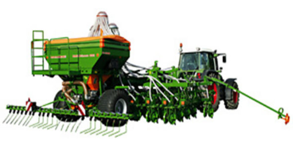
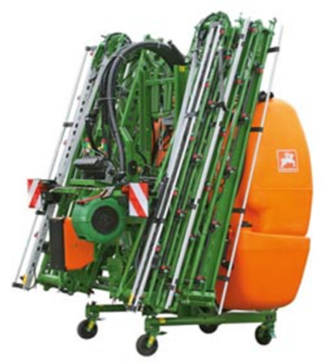
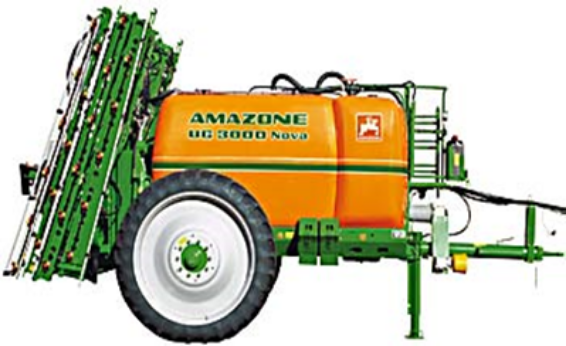
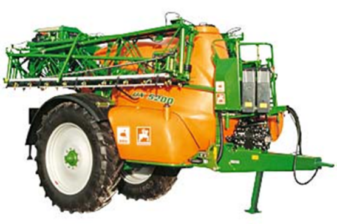
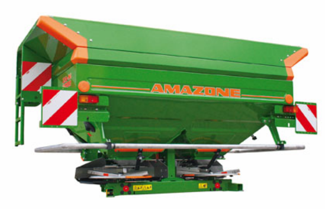

AMAZONE является лидером по производству распределителей минеральных удобрений, сеялок, агрегатов активной (роторные культиваторы и ротационные бороны) и пассивной (дисковые культиваторы и бороны) обработки почвы, сеялок точного высева и опрыскивателей для защиты растений. Кроме этого, компания AMAZONE вот уже много лет предлагает мощную технику для ухода за парками и зелеными насаждениями, а также для зимних работ.
Техника AMAZONE регулярно завоевывает награды крупнейших агротехнических выставок. Специалисты компании разрабатывают и внедряют инновационные технологии, значительно увеличивающие производственный эффект выпускаемого немецкой фирмой оборудования. На сегодняшний день это ведущее предприятие в Европе, сотрудничающее с опытными и признанными поставщиками в более чем 70 странах мира.
Спектр выпускаемой техники позволяет проводить все технологические операции, за исключением вспашки, а также уборки урожая. Компания делает ставку на прогрессивное развитие, высочайшее качество и рациональное производство. Техника AMAZONE быстро окупается и обладает высокой остаточной стоимостью.
Использование продукции AMAZONE делает сельхозпроизводство высокотехнологичным и рентабельным, что особенно важно сегодня, когда хозяйства прилагают огромные усилия для технического перевооружения и повышения доходности своего бизнеса.
При производстве деталей применяются новые виды стали, новейшие методы обработки, покраски поверхности, что, соответственно, увеличивается срок службы запчастей для почвообрабатывающей техники.
Продукция компании AMAZONE известна за своё:
- качество и надежность
- инновацию и мощность
- высокую производительность
- первостепенное рабочее качество
- быстрый и квалифицированный сервис
- надежное и быстрое снабжение запасными частями
- высокую перепродажную стоимость товара, как использованной машины.
Обзор популярной техники Amazone (Амазоне)

Компактная дисковая борона Amazone Catros (Амазоне Катрос)
Компактная дисковая борона Amazone Catros (Амазоне Катрос) - это специалист по неглубокой и интенсивной обработке стерни. Крепление отдельно установленных дисков посредством эластичных резиновых подпружиненных элементов обеспечивает индивидуальную адаптацию дисков к поверхности почвы. Каждый диск может независимо от остальных следовать всем ее неровностям. При этом рабочая глубина остается неизменной. Таким образом, быстрое и равномерное прорастание падалицы и сорной травы обеспечены. Заделка в почву пожнивных остатков дополнительно защищает землю от эрозии и заиления.
Amazone Catros (Амазоне Катрос) предлагается в разных вариантах с различной шириной захвата:
Навесная борона Amazone Catros (Амазоне Катрос) с катком с клиновыми кольцами и шириной захвата от 3 до 6 метров. Варианты от 4 до 6 метров гидравлически складываются до транспортной ширины 2,95 метров.
Кроме того, предлагается и прицепная борона с катком с клиновыми шинами и шириной захвата от 3 до 7,5 метров. Интегрированная ходовая часть - это особенность прицепной бороны Amazone Catros (Амазоне Катрос).

Комбинация культиватор – дисковая борона Amazone Centaur (Амазоне Центаур)
Центаур) - это многофункциональная почвообрабатывающая комбинация для бесплужного земледелия. Широкая область применения охватывает эсктремально ровную обработку стерни, надёжное, интенсивное перемешивание остатков культур и почвы на средней рабочей глубине, а также глубокое рыхление.
В зависимости от вариантов применения предлагаются новые комбинации культиватора и дисковой бороны : Amazone Centaur Super (Амазоне Центаур Супер) и Amazone Centaur Special (Амазоне Центаур Спешиал).
Amazone Centaur Super (Амазоне Центаур Супер) оборудован четырехрядным смещенным расположением зубцов для обработки почвы и комплектной двухрядной дисковой бороной Amazone Catros (Амазоне Катрос) для беспрепятственного прохождения материала даже при очень большом количестве соломы.
В Centaur Special (Амазоне Центаур Спешиал) интегрированы трехрядное расположение зубцов для обработки почвы и один ряд выравнивающих дисков.
Оба варианта предлагаются с шириной захвата от 3 м, 4 м и 5 м, на запрос можно получить агрегаты с шириной захвата до 6 и 7 метров. Трех- или четырехрядное звено с зубцами обеспечивает сплошное рыхление и интенсивное перемешивание. Большая высота рамы в сочетании со специальным расположением зубцов со смещением гарантирует беспрепятственное прохождение материала.
Для быстрого складывания из рабочего в транспортное положение, модели Amazone Centaur (Амазоне Центаур) с шириной захвата 4 и 5 метра имеют гидравлическое складывание. Модели с шириной захвата 3 метра поставляются с жесткой рамой. Amazone Centaur (Амазоне Центаур) достигает экономично и с высокой производительностью оптимальные условия для последующего, успешного мульчирующего посева.

Высокопроизводительная сеялка Amazone Citan (Амазоне Цитан)
Высокопроизводительная сеялка Amazone Citan (Амазоне Цитан) представляет собой одиночную сеялку, без установленных перед ней почвообрабатывающих органов. Она выпускается шириной захвата 8, 9 и 12 м. Пневманическая система дозирования Citan гарантирует точную норму высева в диапазоне от 2 кг/га до 400 кг/га. Благодаря этому сеялка отлично приспособлена к стратегии крупных аграрных предприятий.
Обработка почвы и посев разделены, то есть они проводятся за отдельные рабочие проходы. Таким образом, увеличевается производительность по площади по отношению к комбинированному методу - важный критерий для посева осенью

Высокопроизводительная сеялка Amazone Cirrus (Амазоне Циррус)
Высокопроизводительная сеялка Amazone Cirrus (Амазоне Циррус)
Умеренная потребность в тяговой мощности и в тяговом усилии, а также небольшое потребление горючего, являются важными параметрами прицепной посевной комбинации. Для оптимальной адаптации и эффективной эксплуатации различаются два основных модельных ряда Amazone Cirrus (Амазоне Циррус) в зависимости от спектра применения.
Ядром Amazone Cirrus Special (Амазоне Циррус Спешиал) являются дисковые сошники RoTeC и RoTeC+. Эти сошники располагают диаметром дисков 320 и 400 мм с давлением сошников до 35 и 50 кг. Даже при высоких рабочих скоростях диски гарантируют спокойный ход сошников с точной заделкой семян.
Передние клинообразные шины диаметром 800 мм служат для подуплотнения полосами под посевным горизонтом. Для подготовки семенного ложа применяются два ряда дисковых сегментов. Благодаря стройной конструкции контейнера для семян, видимость к примыкающимся орудиям остается свободной и контейнер легко загружается через свое широкое отверстие. Amazone Cirrus Special (Амазоне Циррус Спешиал) предлагается шириной захвата 3, 4 и 6 м.
Сеялка Amazone Cirrus Special Super (Амазоне Циррус Супер) с уплотняющими сошниками предназначена для высокой производительности, и это при незначительном требовании к интенсивности предшествовавшей обработке почвы. Признаком Amazone Cirrus Special Super (Амазоне Циррус Супер) является уплотняющий сошник PacTeC. Большые клиновые шины диаметром 800 мм несут на себе весь агрегат, уплотняя и выравнивая полосами посевное ложе перед сошниками, и обеспечивают точную глубину заделки. Жесткое крепление сошников на клинообразных шинах ведет к крайне спокойному ходу сошников. Amazone Cirrus Special Super (Амазоне Циррус Супер) выпускается с шириной захвата 3, 4 и 6 м. Сеялка с уплотняющими сошниками рабочей ширины от 4 до 6 метров быстро складывается на транспортировочную ширину до 3 м.
Далее предлагается посевная комбинация Amazone Cirrus Activ (Амазоне Циррус Эктив). Вместо двухрядной дисковой бороны, например, как на Cirrus Super и Special, для предпосевной обработки почвы в Amazone Cirrus Activ (Амазоне Циррус Эктив) применяется роторный культиватор. Мы остаемся верны девизу – сначала уплотнение, затем посев. Этот принцип сохраняется также в Amazone Cirrus Activ (Амазоне Циррус Эктив), где передний каток с клинообразными шинами производит обратное уплотнение полосами в зависимости от имеющихся условий. По сравнению с обеими известными сериями Cirrus в активном варианте был увеличен диаметр клинообразных шин с 800 мм на 1050 мм. На новой Amazone Cirrus Activ (Амазоне Циррус Эктив) сошники RoTeC+ выполняют задачу точной заделки семян. Диаметр диска 400 мм в сочетании с регулируемым давлением сошников до 50 кг / сошник обеспечивает чрезвычайно спокойный ход сошника. Amazone Cirrus Activ (Амазоне Циррус Эктив) предлагается шириной захвата 6 м. Для оптимальной и эффективной работы требуется трактор мощностью от 250 л.с. Средняя рабочая скорость колеблется в пределах от 12 до 15 км/ч.

Навесная сеялка AMAZONE D9 (Амазоне Д9)
Механическая навесная сеялка Amazone D9 (Амазоне Д9) в виде модели Amazone D9 (Амазоне Д9) Special выпускается с рабочей шириной 2,5 и 3 м. D9-25 Special имеет контейнер для семян размером 360 л. Большая вместимость D9-30 благодаря соответственным насадкам увеличивается с 450 л до 710 или 850 л. Amazone D9 (Амазоне Д9) Special отличается прочной конструкцией, большими колесами и легкой загрузкой.
Механическая навесная сеялка Amazone D9 (Амазоне Д9) Super, для средних и крупных предприятий, предлагается с рабочей шириной захвата 3,00 и 4,00 м. Эта модель, очень прочной конструкции, оснащена большими колесами.
Контейнер для семян модели Amazone D9-30 Super объемом 600 л легко заполняется и может варьироваться при помощи насадок от 860 до 1000 л. Вместимость контейнера модели D9-40 Super увеличивается благодаря насадке с 830 до 1380 л.
Для особенно большой ширины захвата и высокой производительности имеются Amazone D9-60 Super и Amazone D9-120 Super с рабочей шириной 6 и 12 м. Amazone D9-60 Super состоит из двух 3-метровых сеялок, Amazone D9-120 Super из трех 4-метровых сеялок, установленных на раме с большими резиновыми колесами. В итоге это дает максимальную производительность по выгодной цене. Для классического посева или при небольшом количестве соломы у всех моделей есть сошники WS (анкерные сошники с тупым углом вхождения). Сошники RoTeC (дисковые сошники) оптимальны для мульчированного посева. Сеялка D9 может использоваться самостоятельно или в комбинации со всеми почвообрабатывающими орудиями.

Сеялка прямого посева Amazone Primera DMC (Амазоне Примьера)
Высокопроизводительная сеялка Amazone Primera DMC (Амазоне Примьера) является результатом последовательной работы в направлении выполнения требований и желаний практиков. Эта универсальная высокопроизводительная сеялка с соответствующими оснащенными сошниками в особенности подходит для мульчированного и прямого посева, а также для посева после плужной вспашки. Высокопроизводительная сеялка Amazone Primera DMC (Амазоне Примьера) разрабатывалась для прямого и мульчированного посева в острозасушливых регионах. Посевной материал закладывается под пожнивные остатки, чтобы обеспечить хороший контакт посевного материала с почвой и, тем самым, создать оптимальные условия для всхода семян. Amazone Primera DMC (Амазоне Примьера) - это машина для универсального земледелия, так как она дает предприятиям возможность, выбирать подходящую технологию возделывания на данный момент.

Навесной опрыскиватель AMAZONE UF (Амазоне УФ)
Устройства по защите растений AMAZONE (АМАЗОНЕ) предлагают максимальные современные технологии в области защиты растений, а также надежность, стабильность и просту обслуживания. Навесные опрыскиватели AMAZONE UF (Амазоне УФ) предлагаются с резервуарами четырех различных объемов. AMAZONE UF (Амазоне УФ) 901 обладает резервуаром объемом выше 1.050 литров, UF 1201 - объемом свыше 1.350 литров. Большим объемом резервуара оснащены агрегаты UF 1501 (объемом 1.720 литров) и UF 1801 (объемом 1.980 литров). Так в одном агрегате объеденены преимущества прицепных и навесных опрыскивателей. Именно на небольших площадях используется их маневренность и простота управления, при одновременно высокой производительности. Навесные опрыскиватели AMAZONE(Амазоне) сeрии UF имеют узкий, с оптимально расположенным центром тяжести резервуар и поставлются со штангами Q-plus с шириной захвата от 12 до 18 метров и со штангами Super-S с шириной захвата от 15 до 28 метров. Штанги AMAZONE (АМАЗОНЕ) благодаря специальной профильной конструкции сверхпрочны и чрезвычайно легки. Легкая конструкция позволяет использовать даже трактора малой мощности. Для безопасного и быстрого передвижения по дорогам штанги Super-S обладают сверхмалой транспортной шириной 2,40 метра.

Прицепной опрыскиватель AMAZONE UG Nova (АМАЗОНЕ УГ НОВА)
Nova (Амазоне УГ Нова) предлагается с объемом резервуара 2.400 и 3.200 литров. Резервуар с оптимальным расположением центра тяжести и абсолютно гладкими стенками, высокой посадкой, закругленной рамой, высокопроизводительными насосами, а также современной, удобной для применения техники арматуры и компьютерного оборудования - это основные преимущества прицепного опрыскивателя AMAZONE UG Nova (Амазоне УГ Нова), говорящие сами за себя.
Точное дозирование обеспечивают штанги Q-Plus или Super-S шириной захвата от 15 до 28 метров. Благодаря профильной конструкции, штанги AMAZONE (Амазоне) одновременно сверхпрочные и сверхлегкие.
Легкая конструкция позволяет использование даже небольших тракторов. Для безопасного и быстрого движения на дорогах, штанги Super-S, даже большей рабочей ширины, имеют сверхузкую транспортную ширину 2,4 м

Прицепной опрыскиватель AMAZONE UX (АМАЗОНЕ)
C новым прицепным опрыскивателем UX, AMAZONE (АМАЗОНЕ) предлагает компактный опрыскиватель небольшой массы и низким центром тяжести. AMAZONE (АМАЗОНЕ) UX завершает имеющуюся уже программу прицепных опрыскивателей. Семейство UX состоит из трех прицепных опрыскивателей, которые отличаются друг от друга различным объемом резервуара. Возможен объем резервуара от 3.600 литров (UX3200), 4.450 литров (UX4200) и до 5.460 литров (UX5200). Резервуар с благоприятным расположением центра тяжести и абсолютно гладкими стенками обеспечивает быструю и легкую очистку.
AMAZONE UX (АМАЗОНЕ)оснащается штангами Super-S для ширины захвата от 15 до 28 метров. Опрыскиватели с шириной захвата штанг от 24 до 40 метров оснащены новыми штангами Super-L. Несмотря на большую ширину захвата, штанги Super-L складываются до сверхузкой транспортной ширины всего лишь 2,6 метра. Размещаются штанги по бокам резервуара

Центробежный разбрасыватель AMAZONE ZA-M
предприятия и предпринимателя свой распределитель.
Двухдисковый распределитель AMAZONE (АМАЗОНЕ) ZA-M 900, это первый выгодный шаг к технике ZA-M. Благодаря прочным и легко устанавливаемым насадкам возможно увеличение объема контейнера от 900 до 1700 литров. Прочная и к тому же легкая конструкция рам оптимально разработана для этого класса распределителей.
Двухдисковый распределитель AMAZONE (АМАЗОНЕ) ZA-M 1200 с объемом контейнера 1200 литров может дополнительно оборудоваться насадками до 2700 литров.
AMAZONE (АМАЗОНЕ) ZA-M 1500 идеальный разбрасыватель для сельскохозяйственных предприятий и частных предпринимателей. Двухдисковый распределитель AMAZONE (АМАЗОНЕ) ZA-M 1500 с объемом контейнера 1500 литров может дополнительно оборудоваться насадками до 3000 литров.
Для окружающей среды: распределители удобрений AMAZONE ZA-M выполняют в сочетании с системой контроля по краям Limiter европейскую экологическую норму для распределителей удобрений EN 13 739.